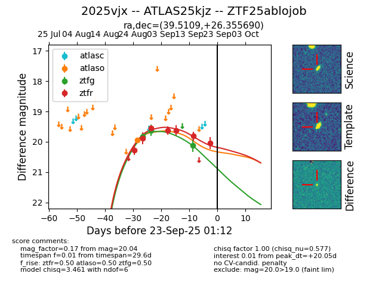
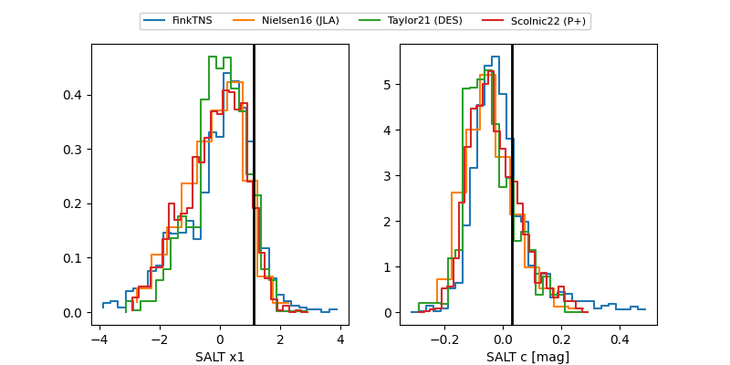

FINK: ZTF25ablojob
Lasair: ZTF25ablojob
ALeRCE: ZTF25ablojob
TNS: 2025vjx
YSE: 2025vjx
ZTF25ablojob (ztf,fink)
2025vjx (tns,yse)
ATLAS25kjz (atlas)
equatorial (ra, dec) = (39.5109,+26.35569)
galactic (l, b) = (150.7960,-30.68498)


last atlaso=19.94, ztfg=20.13, ztfr=20.04
1 atlaso, 3 ztfg, 7 ztfr detections